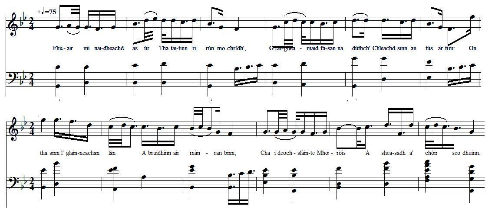
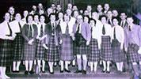

Òran don Èideadh Ghàidhealach - Song to the Highland Garb
Chant du costume des Highlands
Le Donnchadh Bàn Mac an t-Saoir - by Duncan Ban MacIntyreFrom "ORAIN AGUS DANA Gaidhealach le Donnchadh Bàn Mac an t-Saoir"(digital.nls.uk/early-gaelic-book-collections/ ) Tune - Mélodie "Òran don Èideadh Ghàidhealach" as sung by Còisir Ghàidhlig Ceann Loch Chille Chiarain (the Kinloch-Kilkerran Gaelic choir) (www.bbc.co.uk/alba/oran/orain/oran_don_eideadh_ghaidhealach/) Sequenced by Christian Souchon (c) 2015 |


|
SONG TO TH HIGHLAND GARB
1. I have lately received tidings that accord with my heart's desire, that we may have the native costume we wore in our earliest days; since, with full glasses, we are discussing delectable news, here is the toast of Montrose who claimed this right for us. 2. To-day I saw in Edinburgh the festive company gathered; O blessed letter that told us the news that gave rise to our glee! The bagpipe was skilfully tuned in clear view on the smooth knoll, we displayed our garb in public, and who will call us rebels? 3. For thirty years and more a tweed cassock enveloped our back; we had a hat and a coat — that style was foreign to us; buckles were tying our shoes — smarter we deemed the thong; the obnoxious costume we wore made carles of our comely youths. 4. It partly ruined our figure from the sole to the top of our head; we were so filled with depression that every man became ill; indeed, their plight was as dire as ever arose in my time, when the London clique deprived us of all dignities and respect. 5. For a long time honour was lost, while Lowlanders' mode clung to us; a coat that reached to the heel — it never looked handsome on us; the breeches must needs be in vogue when our authority grew so meek that every clan was enslaved, and every male left unclad. 6. We are now as we like to be, and high at court is our friend, who dressed the men in the style of which the English Parliament robbed them. Ever blessed be the Marquis who pled our cause at this time; he won back for us every right due, by the King's and the crown's decree. 7. He secured for us sanction for arms to serve us for hunting the peaks, and defending our men in the field by leaving their enemies crushed; it would stir up the valour of clansmen for the wielding of blades with zest — pipe, with flag on staff, playing the loud march that is dear to me. 8. We have now gained freedom that pleases patriotic feelings all round — sanction to don our garb without asking the tortuous crew; now we are dressed as is meet, and the mode will delight our eye; we have discarded the breeches, and they will never emerge from recess. 9. We have assumed the suit that is lightsome and fitting for us — the belted kilt in its pleats, and a waistcoat of vivid cloth; a jacket of chequered homespun in which crimson tints are massed; hose that restrains not our step, and falls short of the knee by a span. 10. The Gaels will hold up their heads and they will be hemmed in no more; those tight fetters have vanished that made them languid and frail; they will traverse the mountain moors to hunt slim stags with their hound; sprightly will they go dancing, and react to the lilt of each tune. 11. We are obliged to the noble who, by his firmness, won renown; by resolute skill he has thrust the folly of others aside; heir of the chief of the Grahams , with many strains of blue blood in his face, this is the talented Marquis, the son who will follow the Duke. Source: "www.poetrynook.com/poem/song-highland-garb" |
ÒRAN DON ÈIDEADH GHAIDHEALACH
1. Fhuair mi naidheachd as ùr Tha taitinn ri rùn mo chrìdh', Gum faigheamaid fasan na dùthch' Chleachd sinn an tùs ar tìm: On tha sinn le glainneachan làn A' bruidhinn air mànran binn, 'S i deoch-slàinte Mhontròis A sheasadh a' chòir seo dhuinn. 2. Chunna mi 'n-diugh an Dùn Èideann Comann nam fèileadh cruinn, Litir an fhortain thug sgeul Air toiseach ar n-èibhnis dhuinn: Pìob gu loinneil air ghleus Air soilleireachd rèidh an tuim; Thug sinn am follais ar n-èideadh, 'S cò a their reubail rinn? 3. Deich bliadhna fichead is còrr Bha casg den chlò mur druim; Fhuair sinn ad agus cleòc 'S cha bhuineadh an t-seòrs' ud dhuinn; Bucaill a' dùnadh nam bròg, 'S e 'm barrall bu bhòidhche leinn; Rinn an droch-fhasan a bh' oirnn Na bodaich der n-òigridh ghrinn. 4. Mhill e pàirt der cumhachd On bhlàr gu mullach ar cinn; Bha sinn cho làn de mhulad 'S gun d' fhàs gach duin' againn tinn; 'S ann a bha 'n càs cho duilich 'S a thàinig uile rir linn, Nuair a rinn pàrtaidh Lunnainn Gach àit' is urram thoirt dhinn. 5. O 's fhada bha 'n onoir air chall Is fasan nan Gall oirnn dlùth, Còta ruigeadh an t-sàil, Cha tigeadh e dàicheil dhuinn; B' èiginn don bhriogais bhith ann, Nuair chaidh an commannd cho cumhang 'S gun d' rinneadh gach fine na thràill, 'S gach fireannach fhàgail rùisgt'. 6. Tha sinn a-nis mar is math leinn 'S gur h-àrd ar caraid sa chùirt, Chuir air na daoin' am fasan Rinn Pàrlamaid Shasainn thoirt dhuibh Beannachd gu bràth don Mharcus A thagair an-dràst' a' chùis Fhuair e gach dligheadh air ais dhuinn Le ceartas an rìgh 's a' chrùin. 7. Fhuair e dhuinn comas nan arm, A dheanamh dhuinn sealg nan stùc, 'S a ghleidheadh ar daoine sa' chàmp, Le fàgail an nàimhdean brùit Thogadh e misneach nan clann Gu iomairt nan lann le sunnt, Piob, a's bratach ri crann, 'S i caiseamachd àrd mo rùin. 8. Fhuair sinn cothrom an-dràst' A thoillicheas gràdh gach dùthch', Comas ar culaidh chur oirnn Gun fharaid de phòr nan lùb; Tha sinn a-nis mar as còir Is taitnidh an seòl r' ar sùil; Chuir sinn a' bhriogais air làr, 'S cha tig i gu bràth à cùil. 9. Chuir sinne suas an deise, Bhios uallach, freagarach, dhuinn, Breacan an fhèile phreasach, A's peiteag do'n eudach ùr; Cot' a chadadh nam ball, Am bitheadh a' chàrnaid diù, Osan nach ceangail ar ceum, 'S nach ruigeadh mar réis an glùn. 10. Togaidh na Gàidheil an ceann, Cha bhi iad am fang nas mù; Dh'fhalbh na spèirichean teann Thug orra bhith mall gun lùth; Siùbhlaidh iad fireach nam beann A dh'iarraidh dhamh seang len cù 'S eutrom thèid iad a dhannsa Freagraidh iad srann gach ciùil. 11. Tha sinn an comain an uasail A choisinn le cruadal cliù; Chuir e le teòmachd làidir Faoineiseachd chàich air chùil Oighre chinn-chinne nan Greumach , 'S iomadh fuil àrd na ghnùis, 'S ann tha Marcus an àigh Am mac thig an àite 'n Diùc. From ORAIN AGUS DANA Gaidhealach le Donnchadh Bàn Mac an t-Saoir (Songs and poems in Gaelic by Duncan Ban McIntyre (10th edition, 1887 Edinburgh) |
CHANT DU COSTUME DES HIGHLANDS
1. Voici les dernières nouvelles Réjouissez-vous! Le costume de nos ancêtres N'est plus tabou! Puisque l'on a rempli nos verres, Chantons ce droit! Je porte ce toast à Montrose : On le lui doit. 2. En Edimbourg j'ai vu la foule Qui s'assemblait. On y déclarait ouvertes Les festivités. Face à la butte, la cornemuse Qui préludait Saluait notre antique mise Qu'on peut porter! 3. Depuis trente ans et d'avantage Nos pauvres dos Etaient courbés sous les casaques Et les chapeaux Et des boucles fermaient nos chaussures Pas des lacets Conférant de vieillards l'allure Aux plus jeunets. 4. Cela cassait nos silhouettes De pied en cap; Nous versions ce poison sans cesse Dans nos hanaps. C'était la vexation la plus rude Qui fut jamais, Depuis qu'à Londres on nous prive De dignité. 5. Etant depuis belle lurette "Lowlandisés", Un manteau couvrait nos chaussettes, Quoi de plus laid? Il fallait porter la culotte, - Ordre des chefs-. Faisant de nos clans des hilotes Nus, derechef. 6. Cela c'est de l'histoire ancienne: Un cœur vaillant Fit de notre cause la sienne Au Parlement. Marquis, sois béni d'âge en âge, Toi qui plaidas Notre cause en termes si sages, Auprès du roi! 7. A nous les armes pour la chasse Sur les sommets; Pour repousser l'intrus qui passe Sur nos guérets! - De quoi ressusciter en nos âmes L'ardeur d'antan — Que cornemuse et oriflamme Marchent devant! 8. Il est permis aux patriotes De ce pays, De mettre aux orties la culotte Sans alibi. Nous n'aurions jamais dû cesser d'être Porteurs de kilts: Les culottes vont disparaître, Toile ou coutil. 9. Nous remettons notre costume Le plus seyant: Kilt plissé pris dans la ceinture, Gilet pimpant; Vestes à carreaux tissées sur place, Rouges surtout, Bas qui n'entravent point et laissent Voir les genoux. 10. Le Gaël va relever la tête, Libre à nouveau; Les bandes serrées cessent d'être! Ces oripeaux L'empêchaient d'arpenter les landes Avec ses chiens De prendre part aux sarabandes Avec entrain. 11. Noble, à qui l'on est redevable De ces bienfaits, Saluons l'ardeur inépuisable Qui t'animait; Chef des Graham , ton fils est digne De ses aînés, Et au Duc, de l'honneur insigne De succéder! (Trad. Christian Souchon (c) 2015) |

the Kinloch-Kilkerran Gaelic choir